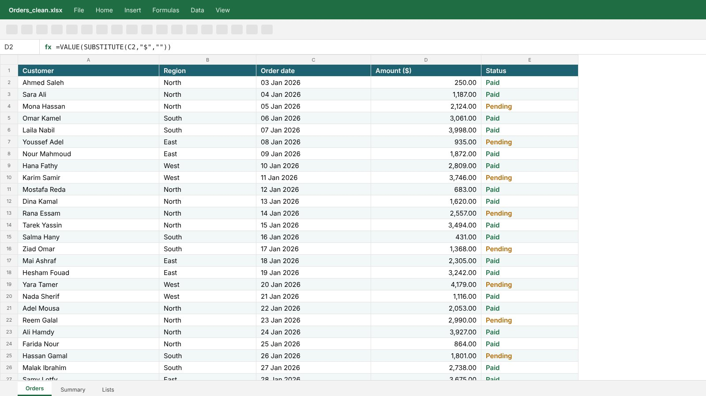
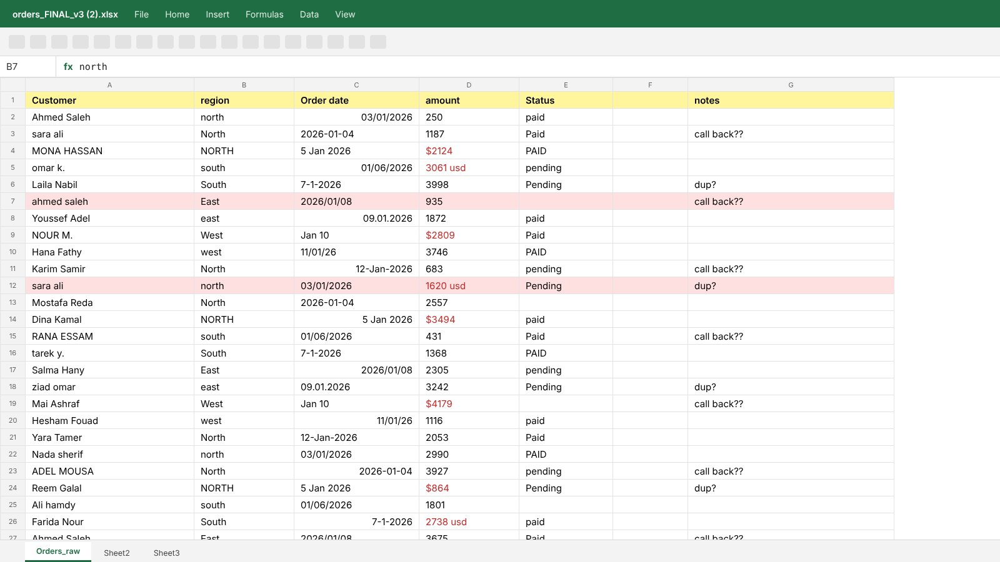

Before and after
Drag to compare


Design tips in one minute
Real tips you can use today, even if you do it yourself.
One row per record, one column per field
Mixed layouts break every formula and filter.
Never merge cells in data
Sorting and pivot tables stop working.
Keep dates as real dates
Text that looks like a date can’t be sorted or summed.
Turn the range into a Table (Ctrl+T)
Formulas and charts grow with new rows.
How I work
- 1Find every problem first
- 2Fix dates, numbers and duplicates
- 3Turn the data into a clean table
Numbers stored as text never add up. I convert them so your totals are right.
I keep a copy of the original sheet, so nothing is ever lost.
Samples


Packages
Fixed price. No extra fees.
- Unlimited revisions
- Editable source file + PDF
- Pay after a watermarked preview
- Summary report
- Unlimited revisions
- Editable source file + PDF
- Pay after a watermarked preview
- Summary report
- Dashboard
- Unlimited revisions
- Editable source file + PDF
- Pay after a watermarked preview
Compare packages
| Starter | Standard | Premium | |
|---|---|---|---|
| Size | 1 sheet | Up to 5 sheets | Up to 10 sheets |
| Delivery | Within 24 hours | Within 24 hours | Within 24 hours |
| My price | $25 | $45 | $80 |
| Summary report | — | ✓ | ✓ |
| Dashboard | — | — | ✓ |
| Unlimited revisions | ✓ | ✓ | ✓ |
| Editable source file + PDF | ✓ | ✓ | ✓ |
| High-quality images and icons | ✓ | ✓ | ✓ |
| Your colours, fonts and logo | ✓ | ✓ | ✓ |
| Checked 3 times | ✓ | ✓ | ✓ |
| Pay after a watermarked preview | ✓ | ✓ | ✓ |
Questions
Do I pay before I see anything?
No. You see your file with a watermark first. You pay, then you get the clean files.
How many changes can I ask for?
As many as you need on the same order, until you are happy.
What files do I get?
The editable source file (PPTX, DOCX or XLSX) and a PDF.
Is my file kept private?
Yes. I never show client files. Every sample here is my own concept design.
What time zone do you work in?
{tz}. I’m online 9:00–23:00 my time, and every delivery date on this site is shown in your own time.
Send me your file.
You get a fixed price and a delivery time first.
Online nowI reply myself in 15–30 minutes